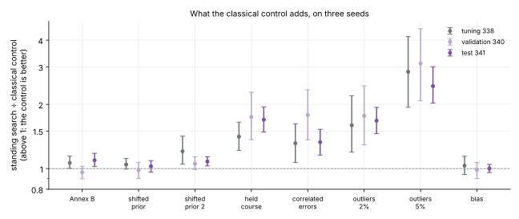
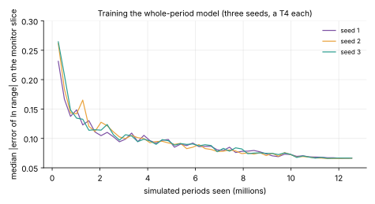
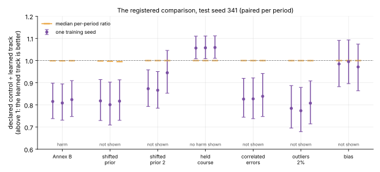
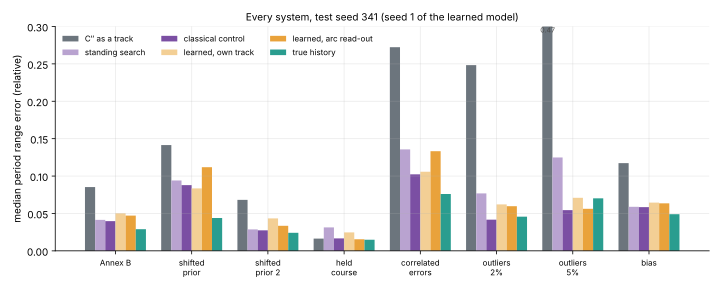
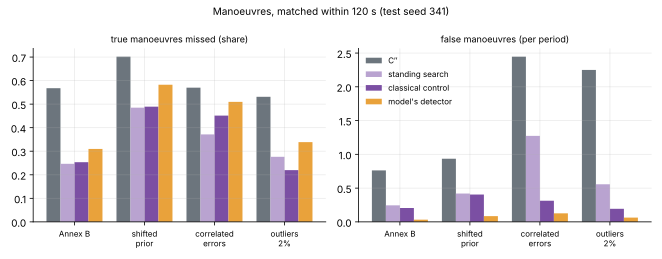
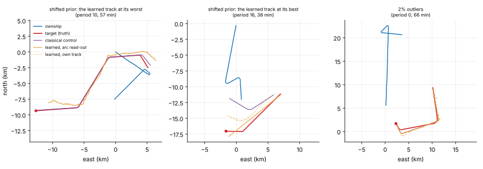

The controls stand, and what the learned model's loss is made of
14 November 2026 · spec 016 (study L) · gitma2
Where spec 015 left us
The evidence search is the standing time-late system.
Large gaps where the simulator's assumptions fail: a shifted prior, correlated errors, outliers, quiet targets.
No classical remedy tried: a learned win there would have been uninterpretable.
Owner's decision: build the controls and train a learned model in parallel, its plan registered first, scored only once the controls exist.
Two sides, one set of periods
What the classical control adds

Outliers 1.7 to 2.4, correlated errors 1.3, quiet targets 1.7; nothing under bias or a shifted prior. It replicates on three seeds.
Training the model

Three seeds on a T4 each, about 7 hours, $14 in all. Two pilot launches failed at start-up first; the owner's dashboard and the ledger agree to 39 cents.
The registered comparison

Learning shown on no split; harm on Annex B. By the rule: the classical controls stand and the learned track stops. The orange ticks, the median period, sit at 1.00.
Every system

The learned track is far better than C″ and about 20% behind the control. Under a shifted prior everyone is at twice the fit told the true history.
The loss is a detector's

Same number of manoeuvres as the control: level (0.95 to 1.04).
Fewer, in a quarter to half of periods: about twice as bad.
The 0.5 threshold was never tuned; the control's settings were.
A lower threshold makes it worse (tuning data).
Panel recomputation, not a registered result.
Three periods

Chosen by a rule in the script: the learned track's worst and best stored period under the shifted prior, and the first stored outlier period with a manoeuvre.
Five approve with findings
All 42 ratios reproduce; no verdict near its line; registration held; scored once.
"This model with this read-out stops", not "learning stops".
The model's own track: 0.71 of the control on clean data; level in range under a shifted prior only by a cancellation.
The "mismatch" conditions lie inside the model's training ranges: it lost in-distribution.
A search started from the model equals the control at a third of the time (tuning data).
What was not achieved
A learned win anywhere; a tuned detector; a model inside the search.
Anything that closes the shifted-prior gap (1.7 to 2.1 for both sides).
A working prior-mismatch diagnostic; a Huber cost; a whitened fit.
The export check on the trained models; IMM and EKF tracks beside; tests for the runner.
What comes next
Adopt the classical control as the standing time-late system.
One cheap classical study: is the shifted-prior gap identifiability?
Only if it is not: the trained models as proposers inside the search, CPU only.
The choice is the owner's. Write-up: /blog/2026/11/14/time-late-learned · record: experiments/20261114-tl4 (review.md)